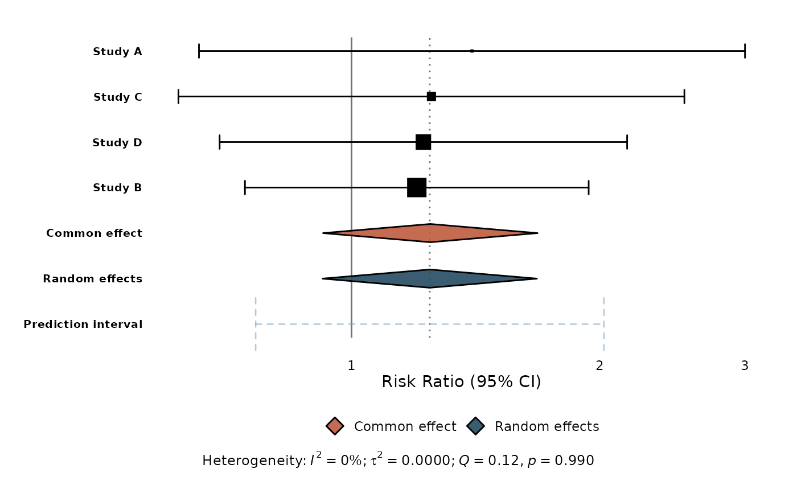

The primary function for creating publication-quality forest plots.
Accepts a meta object (created by meta::metabin(),
meta::metacont(), etc.) or a tidy data frame (as returned by
tidy_meta() or constructed manually).
Usage
ggforest(x, ...)
# Default S3 method
ggforest(x, ...)
# S3 method for class 'meta'
ggforest(
x,
...,
back_trans = c("auto", "exp", "none"),
sort_studies = TRUE,
show_summary = TRUE,
show_predict = TRUE,
show_hetstats = TRUE,
null_effect = NULL,
xlab = NULL
)
# S3 method for class 'data.frame'
ggforest(
x,
null_effect = 0,
xlab = "Effect (95% CI)",
ylab = NULL,
title = NULL,
caption = NULL,
add_summary = FALSE,
summary_method = c("common", "random"),
level = 0.95,
columns = NULL,
effect_header = NULL,
...
)Arguments
- x
A meta object or a tidy data frame with columns
estimate,ci_lower,ci_upper,studlab, and optionallyweight,is_summary,summary_type,subgroup.- ...
Additional arguments passed to methods.
- back_trans
Back-transform ratio measures?
"auto"(default),"exp", or"none".- sort_studies
Sort studies by effect estimate? Default:
TRUE.- show_summary
Include summary effect rows? Default:
TRUE.- show_predict
Include prediction interval? Default:
TRUE(only when random effects model is present).- show_hetstats
Show heterogeneity statistics in plot caption? Default:
TRUE.- null_effect
Null effect value for the reference line. Default:
0.- xlab
X-axis label. Default:
"Effect (95% CI)".- ylab
Y-axis label. Default:
NULL(no label — study labels serve as the y-axis text).- title
Plot title. Default:
NULL.- caption
Plot caption. Default:
NULL.- add_summary
For the data-frame method, if
TRUEcompute a pooled summary from the study rows (inverse-variance and/or DerSimonian-Laird) and draw it as a diamond — on-the-fly meta-analysis without the meta package. Needs asecolumn, orci_lower/ci_upperto recover it. Default:FALSE.- summary_method
Which pooled summaries to add when
add_summary = TRUE:"common","random", or both (default).- level
Confidence level for the pooled summary interval. Default
0.95.- columns
Add a
meta::forest()-style table of text columns to the right of the plot.TRUEshows the effect estimate, 95% CI, and weight; or pass a subset/order such asc("estimate", "ci").NULL(default) draws no columns.- effect_header
Header for the estimate column (e.g.
"Hedges' g"). Defaults to the summary measure (e.g."SMD","RR").
Examples
# \donttest{
library(meta)
m <- metabin(event.e, n.e, event.c, n.c,
data = data.frame(
event.e = c(14, 30, 15, 22),
n.e = c(100, 150, 100, 120),
event.c = c(10, 25, 12, 18),
n.c = c(100, 150, 100, 120)
),
studlab = c("Study A", "Study B", "Study C", "Study D"),
sm = "RR"
)
ggforest(m)

# }